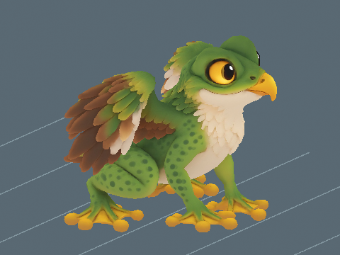

Audio and animation previews, videos and model downloads are retained locally and are not hosted on this website. Text, assessments and still images remain available.
Cloudstone Caverns / Creature profile
Froggle
Vulnerable
Perspective modelling reference · Open image for full size
About Froggle
An emerald glider with a little hooked beak, feathered wings and powerful folded hind legs. Froggle watches the water from high branches before springing into the air and gliding down among floating leaves.
🐟 Gills: Breathe underwater without using breath or taking drowning damage while this pet follows you or is mounted.
One active creature total: following or mounted. Choosing another replaces the current creature.
Hatch bonuses
First hatch: +5,000 Running XP and $100,000 Cash. Later hatches: +500 Running XP (10%), with no further discovery Cash.
One first-hatch award per player and species, shared across qualities and sizes. The certificate shows both credited amounts with the skill icon. Fixed amounts are independent of XP boosts. All hatch bonuses
Assigned game stats. The current creature model is installed alongside its existing egg and named wild spawning. Gameplay acceptance and developer review remain separate.
Froggle's eight distance-based Walk/Run handoffs are installed and score 8.5/10 for the shown straight-travel previews at 3.4-stud height. Walk-to-Run is shown at 4.182 studs/s and Run-to-Walk at 1.005634 studs/s. The six earlier action previews, scores, dates and comments remain unchanged and now match the current native sampler. Earlier dated comments about the previous handoff remain historical; this separate review covers its replacement. Starts, stops, turns, Chase interruptions, live gameplay, multiplayer and mobile performance remain separate checks.
Parent reference masses: Frog (250.00 g) and Eagle (4.30 kg). Parent reference sizes: Frog: 0.121 m (snout-vent body length); Eagle: 0.865 m (body length). For each parent, use the larger recorded height or length. Natural standard size blends 75% of the heavier parent dimension and 25% of the other parent dimension. Compress that natural size to its standard baseline, then apply the saved quality roll directly to dimensions and mass. Model proportions stay fixed. Creature kg uses the heavier parent mass and the actual dominant-dimension ratio. Egg kg is about 10.0892% of actual creature kg. Raw egg height scales with the same roll, followed by a 1.5-stud minimum that does not change kg. One stud is 0.28 metres. Some parent measurements remain body-length, shoulder-height or diameter proxies, and explicit game estimates remain labelled. See the current worked calculation and scale tables below.
A Standard pet at internal scale 1 hatches at 3.49721 studs (0.979219 m) and 5.26 kg. The base statistics describe catalogue dimensions at scale 1.
Egg
Base height
1.762 studs
Base weight
0.53 kg
The egg and creature share one internal scale. Egg kg is the base creature kg times scale. All base egg dimensions multiply directly by scale, and quality chooses the scale band.
Earlier installed Roblox image
Retained Studio Edit image at the earlier display scale. Captured before the 8 November 2026 parent-size blend. Use the updated height, length and weight above; this image does not establish the revised scale or ground contact.
Current frog-hop Walk and Run retain their shown-speed reviews. Eight contact-aware quarter-gate handoffs pass the recorded straight-travel scope. Starts, stops, turns, Chase interruptions and live gameplay remain separate.
Motion previews and downloads are retained locally. Playback starts on request so the rest of the page stays still.
These are local model renders. They do not establish live gameplay acceptance.
Folded loaded crouch, paired hind push, shorter 0.284-second air phase and receiving forefeet now read as a small frog hop. The earlier slow hover is removed. Individual frog-hop cycles pass their shown-speed review. The existing Walk/Run handoff still pops and remains Needs work. Live gameplay is untested.
Retained earlier assessment. The current source needs a new review; this number does not approve the changed version.
Offline native skin and packed skeletal sampler with flat source colour.
Normal playback, constant forward travel over marked ground. Camera tracks the body.
Starts, stops, turns, transitions, Studio materials and live gameplay are separate checks.
Offline packed-skin, export and frame-sequence review. Upright eagle-influenced torso and localized shoulder stretching remain. Installed Edit, live travel, multiplayer and mobile acceptance are separate. Individual frog-hop cycles pass their shown-speed review. The existing Walk/Run handoff still pops and remains Needs work. Live gameplay is untested.
Stronger paired push, airborne leg recovery and forelimb-first landing. Measured contact placement removes the earlier second takeoff dip; the body follows one rise and receiving descent. Individual frog-hop cycles pass their shown-speed review. The existing Walk/Run handoff still pops and remains Needs work. Live gameplay is untested.
Retained earlier assessment. The current source needs a new review; this number does not approve the changed version.
Offline native skin and packed skeletal sampler with flat source colour.
Normal playback, constant forward travel over marked ground. Camera tracks the body.
Starts, stops, turns, transitions, Studio materials and live gameplay are separate checks.
Offline packed-skin, export and frame-sequence review. Upright eagle-influenced torso and localized shoulder stretching remain. Installed Edit, live travel, multiplayer and mobile acceptance are separate. Individual frog-hop cycles pass their shown-speed review. The existing Walk/Run handoff still pops and remains Needs work. Live gameplay is untested.
Energetic frog bound at the retained pursuit speed, with folded recovery and yielding front-leg reception. The takeoff dip and touchdown rebound are removed; a small local shoulder stretch remains.
Retained earlier assessment. The current source needs a new review; this number does not approve the changed version.
Offline native skin and packed skeletal sampler with flat source colour.
Normal playback, constant forward travel over marked ground. Camera tracks the body.
Starts, stops, turns, transitions, Studio materials and live gameplay are separate checks.
Offline packed-skin, export and frame-sequence review. Upright eagle-influenced torso and localized shoulder stretching remain. Installed Edit, live travel, multiplayer and mobile acceptance are separate.
2 November 2026. Patrol: 3 studs/s (0.84 metres/s) at 9.45 studs (2.65 metres) tall. The shown cycle repeats 0.49 times per second.
A slow low walk between checkpoints retains the stronger hopping actions for faster movement.
The existing body-animation scores remain separate. This review assesses patrol speed and cadence; it does not award a replacement animation score.

|
These are offline source-skin previews at the installed guardian scale. Route turns, obstacles, water transitions and multiplayer still need in-game review. Chase and egg-return tuning are unchanged. Existing developer decisions are preserved.
Froggle's eight distance-based Walk/Run handoffs are installed and score 8.5/10 for the shown straight-travel previews at 3.4-stud height. Walk-to-Run is shown at 4.182 studs/s and Run-to-Walk at 1.005634 studs/s. The six earlier action previews, scores, dates and comments remain unchanged and now match the current native sampler. Earlier dated comments about the previous handoff remain historical; this separate review covers its replacement. Starts, stops, turns, Chase interruptions, live gameplay, multiplayer and mobile performance remain separate checks.
Download every action
Action downloads
Froggle action files
Action
GIF
MP4
Idle
Walk
Run
Chase
Fly
Blink
Walk/Run handoff check: 8.5/10
The paired feet recover and receive the body before the next hop instead of abruptly selecting a mismatched gait phase. The airborne entry folds into a forefoot landing, grounded entries retain a stable supporting pair, and the head, wings and belly keep the accepted shape. No new visible foot penetration, stretched limb or discrete phase snap appeared in the inspected timed sequences. The stylized upright torso and existing localized shoulder stretch remain.
Eight finite straight-travel Walk/Run handoffs at 3.4-stud height. WalkToRun previews use 4.182 studs/s; RunToWalk previews use 1.005634 studs/s. This is an offline frame-sequence and shown-speed assessment backed by separate native dispatch/contact checks. Starts, stops, turns, Chase interruption, network behavior, mobile performance and live gameplay remain separate.
These are the exact reference inputs used for this creature. Some are range midpoints or explicit estimates, rather than measured population averages. Height and body length are labelled separately.
Scroll the table sideways on a narrow screen.
Parent inputs and their arithmetic averages. Select a linked value to open its recorded source.
American bullfrog midpoint of typical 90 to 152 mm length; body excludes extended hind legs.
Bald eagle stated mean 4.3 kg and midpoint of 79 to 94 cm body length.
(Parent 1 size + Parent 2 size) / 2
How the weight was recorded
American bullfrog midpoint of typical 90 to 152 mm length; body excludes extended hind legs.
Bald eagle stated mean 4.3 kg and midpoint of 79 to 94 cm body length.
(Parent 1 kg + Parent 2 kg) / 2
Current parent-size blend
Eagle is the heavier parent. Natural target length = 0.75 x 0.865 + 0.25 x 0.121 = 0.679 m, or 2.425 studs.
Models longer than they are tall match forward length; the others match height. All dimensions scale together, preserving proportions. The natural standard dominant dimension is compressed to the 3 to 14 stud baseline range before the saved quality roll is applied. Individual quality scales can exceed that baseline range. Long bodies can be less than 3 studs tall. The parent measurement types above remain explicitly labelled.
Check the calculation at scale 1
Heavier parent
Eagle
Parent reference
0.865 m and 4.3 kg
Creature dominant dimension
3.77862057512 studs x 0.28 = 1.058013761034 m
Direct dominant-dimension weight ratio
4.3 x 1.058013761034 / 0.865 = 5.259490372768 kg
Catalogue creature weight
5.259490372768 kg
Egg weight, median bird ratio
0.530641317085 kg
Base egg height, 50/50 blend
1.8 x sqrt((3.497209749371 / 4) x (5.259490372768 / 4)^(1/3)) = 1.76164053665 studs
Matches the parent reference and catalogue weight.
Heavier parent kg times max(current creature height,length) in metres divided by max(recorded parent height,length). No squared mass or length correction.
The current 75/25 blend uses the larger recorded dimension of each parent independently. Compress the natural standard size first, then apply the saved quality roll directly to dimensions and mass, preserving body proportions. Weight uses the heavier parent and actual dominant dimension. Egg kg uses the median bird fraction. Historical means and earlier balance multipliers are retained for provenance and do not control current mass.
Scale, egg weight and carrying impact
These ranges use the actual quality bands and shared creature scale. Most rolls are near the midpoint.
Computed ranges at each quality. Carry speed is a percentage of normal movement before other modifiers.
Base rates are per second for a creature placed at Home. Eggs still incubating and creatures in inventory do not earn. Currency starts at $0. Hatched pets placed in your Home garden pay into your wallet every second while you are online. The currency is Cash. Normal income scales with saved size and quality: Standard 1x, Fine 2x, Superior 4x, Epic 8x and Legendary 16x. Followers do not earn garden income; active petting temporarily gives the petted creature 3x. See Game mechanicsXP and skill levels for the full rules. Grim Peeper pets earn $10 per second.
Reviewed
Reviewed means Daniel has reviewed the in-game model and animations and is happy with them.
Daniel tells Codex when he approves how a model looks and works. Codex records Daniel's approval and updates this shared site. Reviewed shows a tick when Daniel is happy with the in-game model and animations.
✗ Not reviewed
Daniel: ✗ Pending
Real model and animations, species egg, four shiny finishes and icons are installed. Assigned-biome wild eggs are enabled. Daniel model/animation approval and live gameplay acceptance remain pending.
Pet icon
The face icon used in the game. Labraduck also represents the Pets menu.
Collection artwork
Full-body artwork and its matching silhouette, prepared at 256 by 256 pixels for the Pets collection.